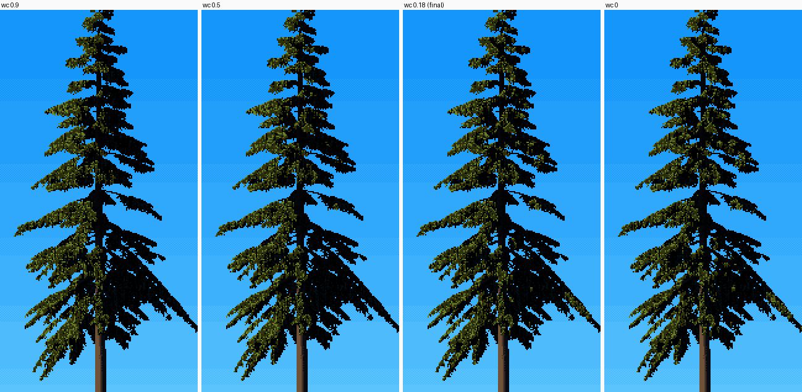
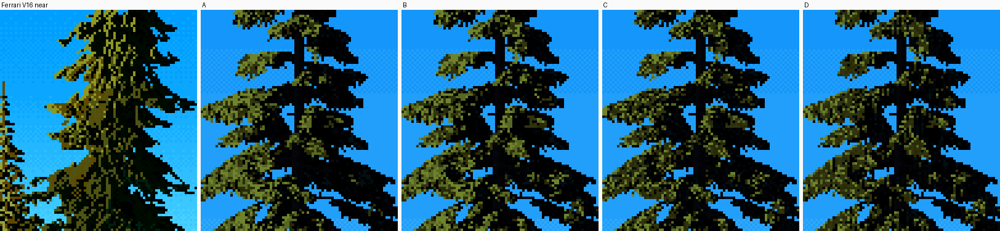
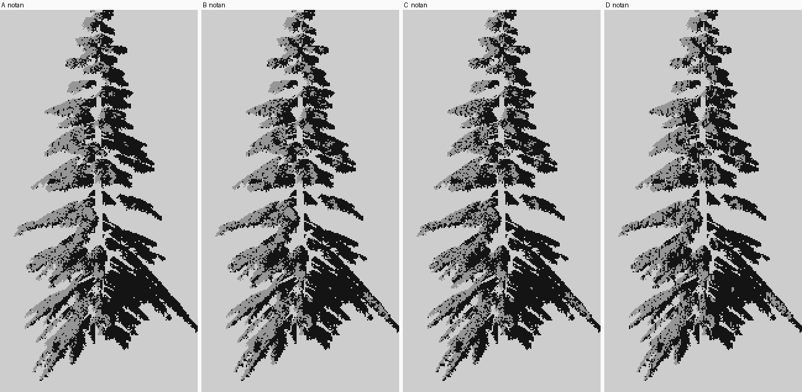

2. Tier-top light
Back to the tutorials. Code: paint.light_foliage and paint.quantize in ~/work/pixelart-studies/elements/conifers/. The second critic called this the key technique of the study.
What the eye sees

Ferrari, V16, the near conifer at 10×.
Look where the light is. It isn't on the left half of the tree. It's on the top edge of every tier, on both sides of the stem: a thin olive run along each drooping shelf, strongest toward the sun but present across the whole crown. Below each run the tier falls into two dark greens and black, with short olive strands hanging into it. Then the next tier's lit edge.
The photos agree. In the Hoh hemlock against sky, each tier is a shelf whose upper surface catches the sky and the sun, and whose underside is dark:

A conifer isn't a cone with a surface. It's a stack of flat sprays, each facing up. Light each spray by its own up-facing normal, and the tiers light themselves.
The mistake this replaces

My trees before the fix: sun-side half olive, far half black. The critic: "each tree reads as two flat halves, a cutout."
Each foliage point's normal was a blend of two normals. One is the crown normal, pointing radially out from the stem and tilted up by the cone's slope. The other is the spray normal, the element's own. I'd weighted them half and half. The crown normal is what makes a cone half-lit: it faces the sun on one side and away on the other, and at weight 0.5 it dominated.
Step 1: weight the crown normal low
From paint.light_foliage:
nc = rad * np.cos(0.35) + np.array([0, np.sin(0.35), 0]) # crown normal: radial, tilted up
nc[:, 1] += topz * 1.2 # the top of the crown faces up
nc /= np.linalg.norm(nc, axis=1, keepdims=True)
wc = P.get("wc", 0.18) # crown-normal weight: low, so light rides tier tops, not a half-split
N = wc * nc + (1 - wc) * n # n: the spray's own normal
N /= np.linalg.norm(N, axis=1, keepdims=True)
wrap = P.get("wrap", 0.15) # translucent needles: light wraps a little
lam = np.clip((N @ L + wrap) / (1 + wrap), 0, 1)
The spray normals point up because the elements are built that way. A frond (foliage_fast._fronds) has the base normal UP + 0.35·side + 0.25·radial, and it turns outward and down only along its drooping tip:
nb = _nrm(UP + 0.35 * S + 0.25 * R)
N = nb[e] + (ek ** 2 * dr[e])[:, None] * dirv[e] - (ek ** 2 * dr[e] * 0.6)[:, None] * UP
One more term darkens the underside of each tier. Each point knows its vertical position within its spray (pad[:, 1]), and ambient light falls off below the twig:
vert = f["pad"][:, 1]
ao *= np.clip(0.85 + P.get("shelf_k", 0.9) * vert, 0.25, 1.15)

The same hemlock, sun from the left, with wc at 0.9, 0.5, 0.18 and 0. Look at the upper tiers on the right of the stem.
Measured on these images, then on Ferrari's spire with the same split at the stem:
| lit share, sun side | lit share, far side | far / sun | |
|---|---|---|---|
wc 0.9 |
0.61 | 0.06 | 0.10 |
wc 0.5 |
0.59 | 0.09 | 0.15 |
wc 0.18 (adopted) |
0.55 | 0.15 | 0.27 |
wc 0 |
0.53 | 0.19 | 0.36 |
| Ferrari, V16 mid spire | 0.36 | 0.11 | 0.31 |
His far side keeps about a third of his sun side's light. At 0.18 mine keeps 0.27 of it; at 0 it keeps 0.36. I'd accept anything in 0.1–0.2 and pick by eye. (I measured this table while writing these pages, with code/measure_wc.py; on the night I only looked.)
Step 2: decide the value plan
The renderer's light has no opinion about how much of the tree should be lit. Decide it, and set the family boundary as a quantile (paint.quantize):
if P.get("lit_frac") is not None and (mat == FOL).any():
thr = max(np.quantile(d[mat == FOL], 1 - P["lit_frac"]), 1e-3)
lit_frac 0.42 for side light. Overcast has no lit family at all (lit_frac_overcast 0.3 of sky-lit tops, with wrap 0.6). In a stand, the quantile is taken over all the trees together (how-to 5).
Step 3: thin the light to the tier edge, texture the dark
Tier-top lighting puts the light in the right place, but it still comes out as broad olive patches several pixels deep. Ferrari's lights are thin: 1–2 px along the edge. Four rules in paint.quantize do the drawing, after the mixture of how-to 1:
fol = mat == FOL
up1 = np.roll(fol, 1, 0); up1[0] = False
bidu = np.roll(G["bid"], 1, 0); dirU = np.roll(d, 1, 0)
# a tier-top pixel: the pixel above is sky, a different branch, or in shadow
top = fol & (~up1 | (bidu != G["bid"]) | (dirU <= thr))
up2 = np.roll(top, 1, 0); up2[0] = False
edge = top | (up2 & (r2 < 0.5)) # the edge is 1 px, sometimes 2
inner = fol & lit & ~edge & (step >= 6)
keep = mark & (r < P.get("inner_mark_p", 0.25)) # a few lit marks survive inside the tier
step = np.where(inner & ~keep, np.where(r2 < 0.55, 5, np.where(r2 < 0.8, 4, 3)), step)
Hanging strands, from lit tier-top pixels down into the tier:
seed_px = top & lit & (r < P.get("strand_p", 0.35))
ln = (2 + (r2 * 3).astype(int)) # 2-4 px long
cur = seed_px.copy()
for kk in range(1, 5):
cur = np.roll(cur, 1, 0); cur[0] = False
put = cur & fol & (np.roll(ln, kk, 0) > kk)
step = np.where(put, np.where(kk == 1, 5, 4 + (r2 > 0.6)), step)
cur = cur & fol
The dark keeps texture: two dark greens instead of flat black.
sh = fol & ~lit & (step <= 1)
step = np.where(sh & (r < P.get("dark_tex", 0.3)), np.where(r2 < 0.6, 2, 1), step)
And at near scale the grain goes vertical. The random field r becomes columns of correlated noise, 1 px wide and about vgrain px tall, faded out by 0.3 m/px:
vg = P.get("vgrain", float(np.clip((0.32 - mpp) / 0.2, 0, 1)) * 2.4)
if vg > 0.2:
rv = gaussian_filter(rng.random((Hh, W)), (vg, 0.01))
r = ndtr((rv - rv.mean()) / (rv.std() + 1e-9)) # back to uniform
The ablation

Ferrari's near conifer, then the top of my hemlock (0.12 m/px) at 4×:
- A:
wc0.5, no edge rules; - B:
wc0.18; - C: plus thin edge lights and dark texture;
- D: plus hanging strands and vertical grain (the final painter).

The same four as a two-family notan: lit family grey, shadow family black. In A the far side is black; from B on, each tier has a grey top on both sides of the stem. C and D thin the grey to the edges.
From A to D the tree goes from "a green shape shaded" to "a dark mass with thin light on its tiers". D is the closest I got to him.
Parameters
wc 0.18, wrap 0.15, shelf_k 0.9, lit_frac 0.42, edge_light on, inner_mark_p 0.25, strand_p 0.35, dark_tex 0.3, vgrain 2.4 below 0.12 m/px, falling to 0 at 0.32.
Limits
Beside him at 8×, two things are left:
- His lit marks have direction. They're 1-px ticks slanting down and out along the needles, often in pairs. Mine are isotropic flecks. The stroke direction is already in the G-buffer (
fol["d"]), so the next step would be to draw lit edge marks as 2–3 px ticks along it. - His darks are greener than mine.
In iso the same idea runs backwards: from above, a whole crown is one surface, and it wants a lit cap. So I'd raise wc there. That's untried.